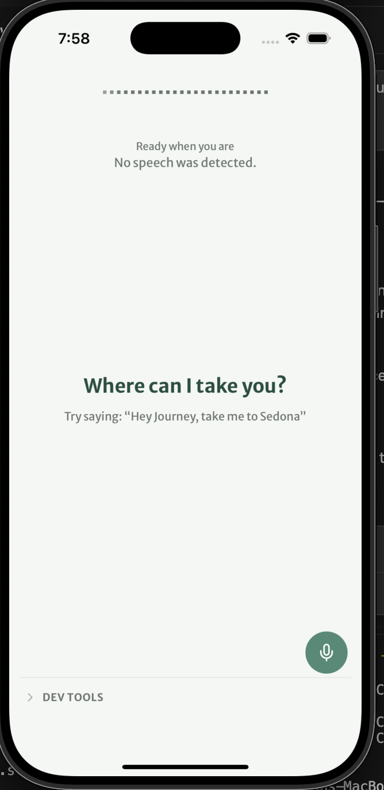
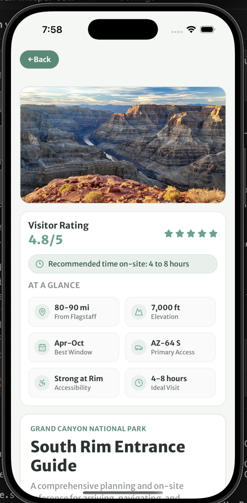
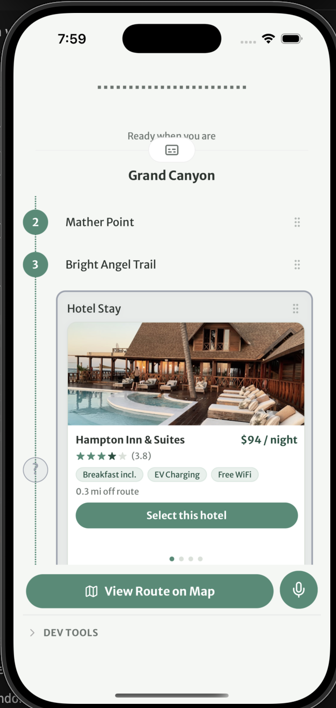

JourneyUp — a voice-first travel concierge that guides instead of overwhelms
What it is. JourneyUp is a voice-first AI travel app: you say where you want to go, and it builds a personalized route — stops, hotels, points of interest — without making you do the organizing work. I'm the designer and one of the front-end engineers. There's no separate handoff process; I design directly in the React codebase, making decisions at the component level and the copy level in the same workflow. The product is currently in investor demo stage.
The central design problem. A travel planning tool lives or dies on one question: how much do you hand back to the user? Show them every option and you've rebuilt the problem they came to solve. Show them nothing and you haven't earned their trust. My position was guide-first: the app makes a call, shows one route, and makes changing it feel like adjusting a plan — not overriding a system.
Decision: route view. The itinerary shows stops in the order we recommend. Users don't choose from alternatives — they get a route. But two escape hatches are always available: drag to reorder any stop by touch, or tell the app to move it by voice. The same action is available both ways. For a voice-first product, nothing critical should be touch-only.
Decision: hotel carousel. Accommodation options appear inline as a swipeable card carousel inside the route list, not on a separate screen. The intent was to keep the user inside the planning flow — browsing hotels shouldn't feel like a detour.
Decision: onboarding scope. Early versions collected demographic data — age, gender — that the AI wasn't actually using. I cut it. What stayed: vehicle make, model, and year, which directly improves route accuracy for range, charging stops, and road type. The rule became: only ask what earns its place.
Process. I use Claude Code as a design collaborator — describing what feels wrong, getting analysis, making the call, pushing the PR. Design decisions happen at the token level (the full theme system), the component level (information hierarchy on hotel cards, mic toggle accessibility), and the copy level ("Ready when you are" instead of "idle"). It's a tighter loop than any Figma-first process I've worked in.